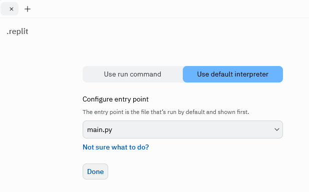
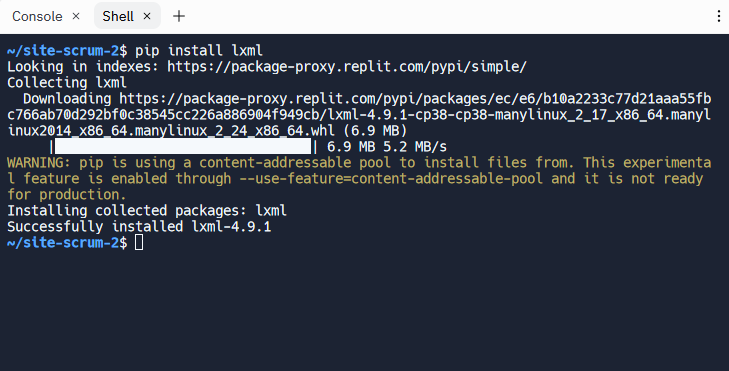

這裡將說明如何利用 Replit 與 cmsite 建立動態與靜態網頁.
在 Replit 上執行 cmsimde
cmsite 動態網站可以在 Replit 環境執行, 以下為設定步驟:
- 建立 Replit 帳號
- 登入 Email 驗證 Replit 寄出的註冊確認電子郵件
- 利用 import repository, 以 cmsite 倉儲內容, 建立 repl
- 進入 .replit 檔案設定頁面, 將 main.py 設定為啟動程式
- 在 shell 介面執行 git submodule update --init --recursive, 取下 cmsite 倉儲中 cmsimde 子模組檔案
- 在 shell 介面執行 pip install flask flask_cors bs4 lxml pelican markdown, 安裝 cmsimde 所需要的模組
- 按下 Run, 啟動 main.py
- 登入 cmsite 動態網站, 修改管理者密碼, 修改標題與內容後, 以 generate_pages 將動態網頁內容轉為靜態格式
- 利用 Replit 中的 Version Control 功能, 將改版資料推向遠端倉儲
將 main.py 設定為啟動程式畫面:

在 shell 介面安裝模組化面:

以下則是從註冊 Replit 帳號, 到執行 cmsimde_site 動態網站的示範影片:
Replit references: